Events · Book Launch
An evening on capability, governance, and trust.
On 17 April 2026, before more than 120 guests at the India International Centre, Justice K.V. Vishwanathan of the Supreme Court of India released Tech, Law & Trust: India's Path to Sovereign IP. What followed was not a launch but an argument — taken through three lenses, by judges, senior advocates, an investor, a policy economist, and a senior scientist.

Watch the full event
The evening, in full.
Recorded live at the India International Centre, 17 April 2026.
The Evening
Three lenses on a single question.
The question was set early, by Justice Vishwanathan in his keynote: can India move from being a consumer of technology to a creator and a rule-maker — and what would it take? He framed it through the three pillars that run through the book itself: capability, governance, and trust.
The rest of the evening took that question and stress-tested it through three lenses. The first was the legal community in a fireside chat. The second was capital and policy in the Apps to Atoms panel. The third was the room itself, in a Q&A that turned unvarnished. And running through all of it was the book's central argument: that the path from apps to atoms is not optional, and that time is the dimension India can least afford to misjudge.
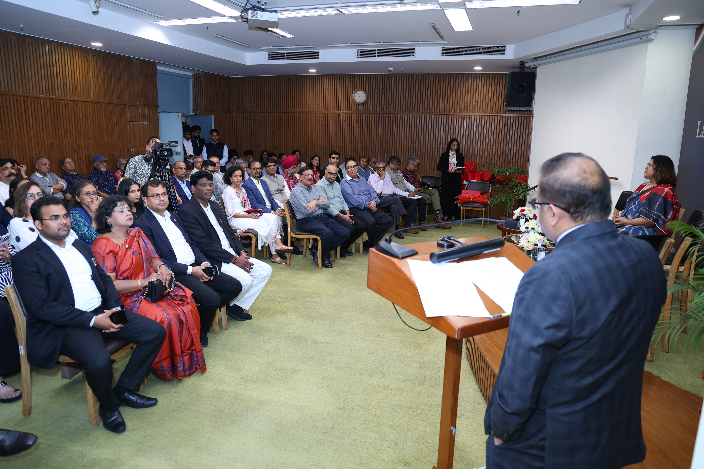
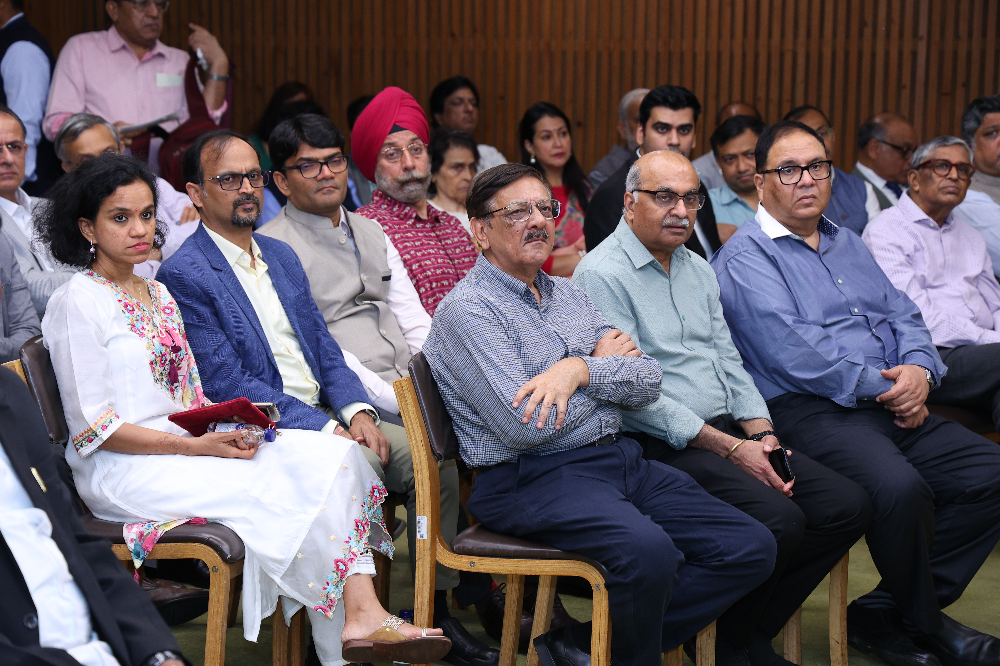
Introduction
Samiran Gupta opens the evening.
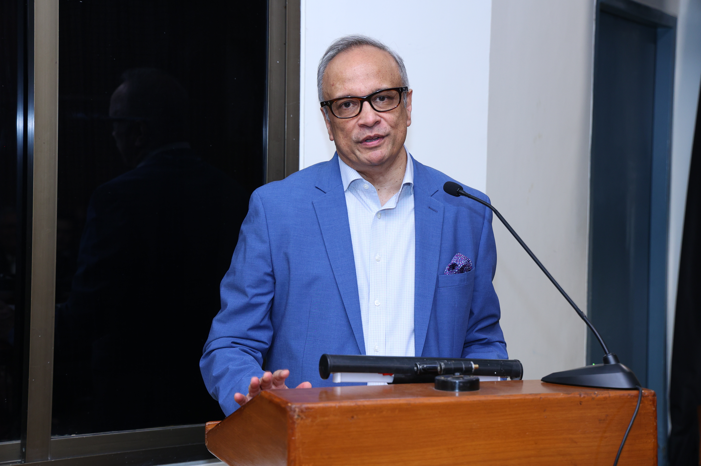
Samiran Gupta opened the evening with the directness of someone who has known the author for thirty years. The book, he said, encapsulates all the work she has done in tech law and policy over the years — and, characteristically, does not stop short of making uncomfortable observations. But it is not, he added, only a book of uncomfortable observations: it is also a book about what could be done about them. With that, he handed the lectern to the author.
Opening remarks
Tamali Sen Gupta — three intelligences, and a question of consent.
She began with the parable of the blind men of Baghdad and the elephant. One held the leg and called it a tree — that, she said, is artificial intelligence. The second held the tail and called it a rope — natural human intelligence: the Ramanujans, the unrepeatable minds. The third held the trunk and called it a snake — and that snake in the room is what she named artificially inflated intelligence: the air of consequence without the substance of it.
Rote learning, she argued, is out of the window. Photographic memory is now a service available to anyone with an internet connection. AI is here to stay. The work, then, is not about tariffs or bans. It is about learning to live with AI, and earning the social consent of citizens for changes that are inevitable. With that — and a one-line endorsement of the keynote speaker as one of the most brilliant, genius-minded people I know — she handed the lectern to Justice K.V. Vishwanathan.
The Keynote
Justice K.V. Vishwanathan: Trust as infrastructure.
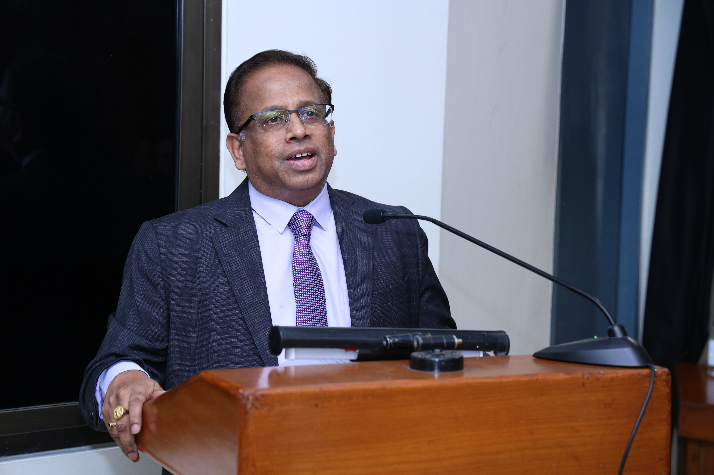
Justice Vishwanathan's keynote did three things at once. It situated the book intellectually, it laid down a framework, and it gave the rest of the evening a vocabulary.
At one level, he said, the book engages with artificial intelligence and governance. At a deeper level, it is a book about trust — the fragile yet essential foundation of any legal system. Trust sustains institutional legitimacy, enables acceptance of outcomes, and binds law to society. At a time when institutions are tested by speed and scale, trust is not a luxury; it is a necessity.
"Technology without law risks becoming power without accountability. Law without technological understanding risks becoming delay without protection. Neither can endure without trust."
Justice K.V. Vishwanathan
He named the three pillars that map directly onto the book's argument. Capability — the ability to build and secure foundational technologies, not merely consume them. Governance — the ability to regulate with agility and precision, without turning every technological shift into institutional friction. Trust — the legitimacy that ensures systems are accepted and citizens remain protected even when systems become complex and opaque.
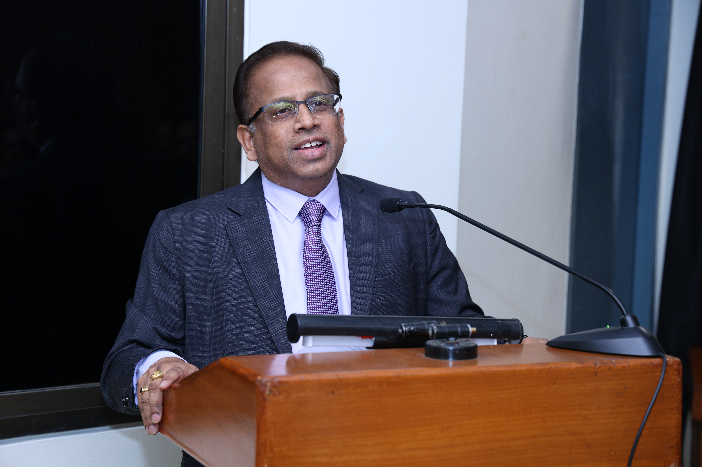
He rejected both extremes — uncritical technological acceleration that disregards rights, and excessive caution that stifles innovation. The path between them, he argued, is design: due process, transparency, and accountability embedded into the architecture of technological systems themselves. In such a framework, law is not merely reactive. It becomes integral. Trust is not incidental. It becomes infrastructure.
"Progress that diminishes dignity is no progress at all."
Justice K.V. Vishwanathan
The judiciary, he noted, will increasingly confront questions of algorithmic accountability and digital due process. But the role must remain measured: courts do not design systems, but they ensure that systems remain just.
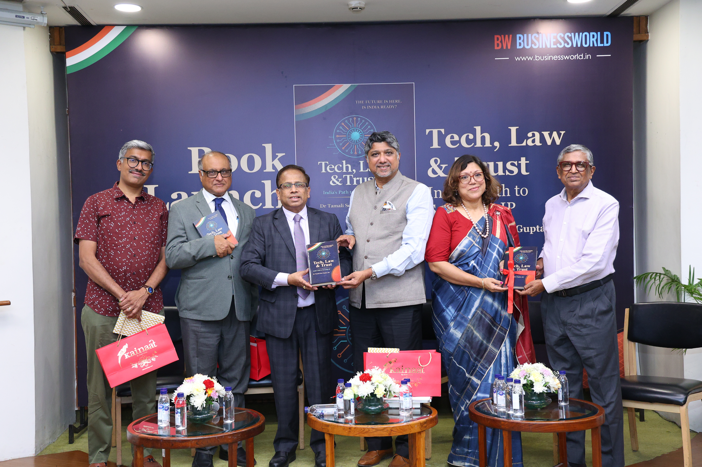
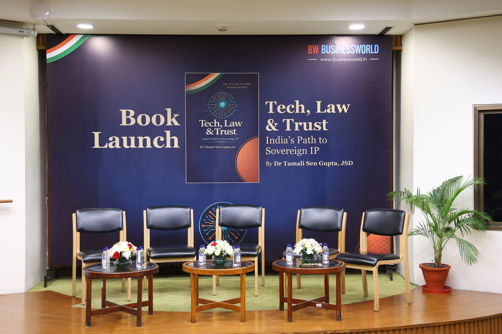
Lens One — The Legal Community
Fireside chat: Does AI need its own law?
Justice Harish Vaidyanathan Shankar (Delhi High Court), Senior Advocate Gopal Shankaranarayanan, Senior Advocate Jaideep Gupta, in conversation with the author.
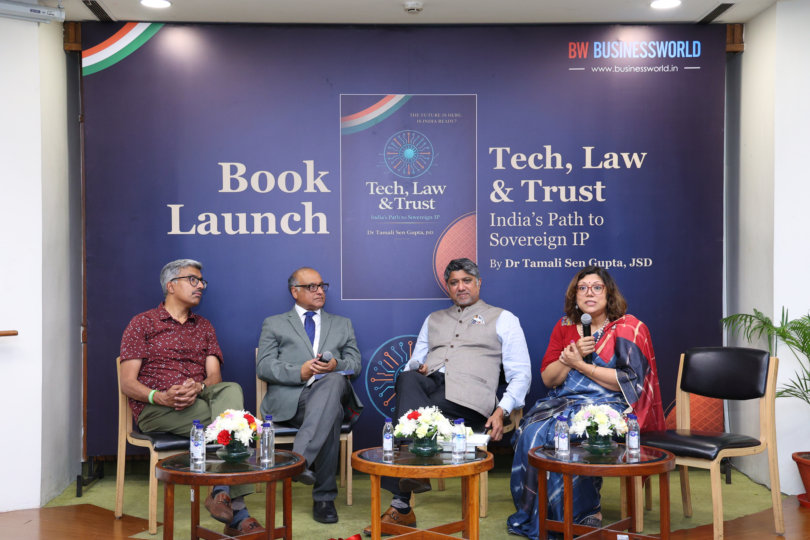
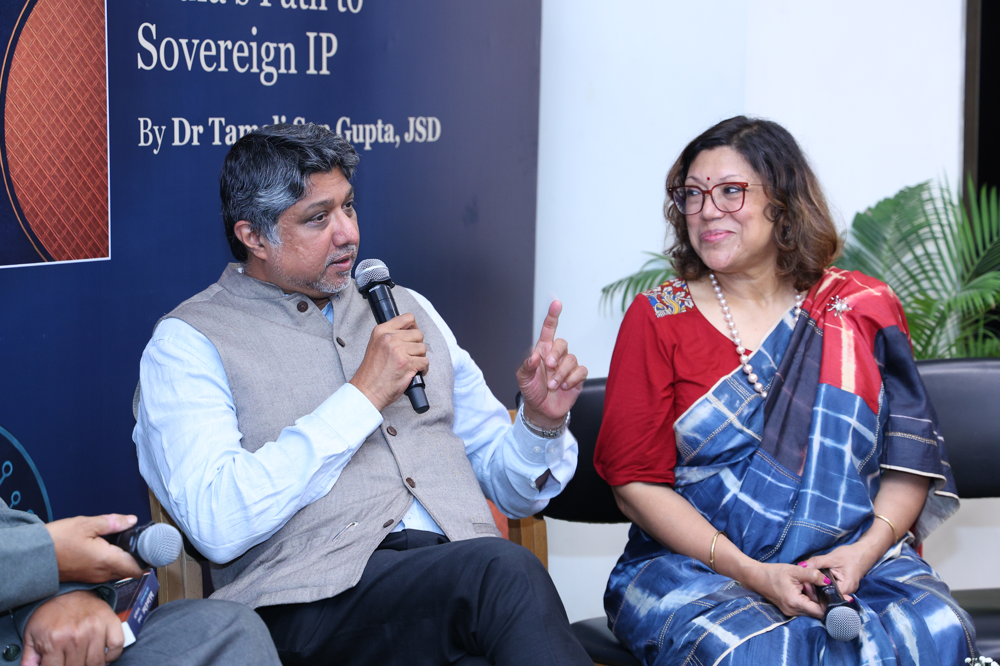
Justice Harish Vaidyanathan Shankar
Judge, Delhi High Court
Justice Harish opened the conversation and named the live question in patent law worldwide today: can AI be termed an inventor? He returned to Tamali's elephant — AI, he said, is precisely that: it depends entirely on the data set you feed it. A voracious appetite, capable of producing cogent and tangible output within seconds, but always shaped by what it has consumed. That, he said, is where the word "trust" in the title earns its place: in whether we can build a regulatory regime in which an AI system works for us and with us — never the other way around.
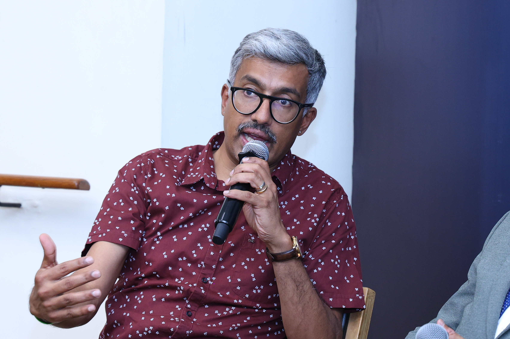
Gopal Shankaranarayanan
Senior Advocate, Supreme Court of India
Gopal made the strongest case of the evening for a dedicated AI law. India in 2000, he reminded the room, met the arrival of the internet with the Information Technology Act — underwhelming, knee-jerk, and only useful after years of amendment. AI, he argued, is at the same starting point — but this time we are not behind the curve, and the choice is real.
"AI is not something you can just squeeze into existing legal mechanisms. We need a very devoted AI law."
Gopal Shankaranarayanan
He was, he conceded later, sceptical of the more apocalyptic readings of AI's velocity. India, with its scale and its slow-moving institutional reflexes, will be a barrier to rapid technological displacement before it is a victim of one — and our IP regime, especially in pharma, has more flexibility and elbow room than the traditional capitalist orthodoxy of the West allows.
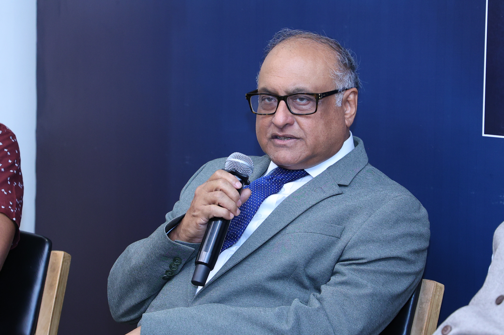
Jaideep Gupta
Senior Advocate, Supreme Court of India
Jaideep took the opposite tack. Universities, he said, are where real creation begins — and India's scientific temper at the university level is not yet where it needs to be. As for governance, he was blunt:
"If we wait for the law to catch up, already we have lost the battle."
Jaideep Gupta
Legal systems take decades to be tweaked or changed; in that interval, we have to plunge in with the existing tools — the Contract Act, administrative law, regulatory mechanisms. He flagged the deeper shift in contract doctrine itself: from the classical position that courts only enforce what parties agree to, towards an implied duty of good faith in every contract. That duty, he suggested, is what trust looks like once the law catches up to the technology.
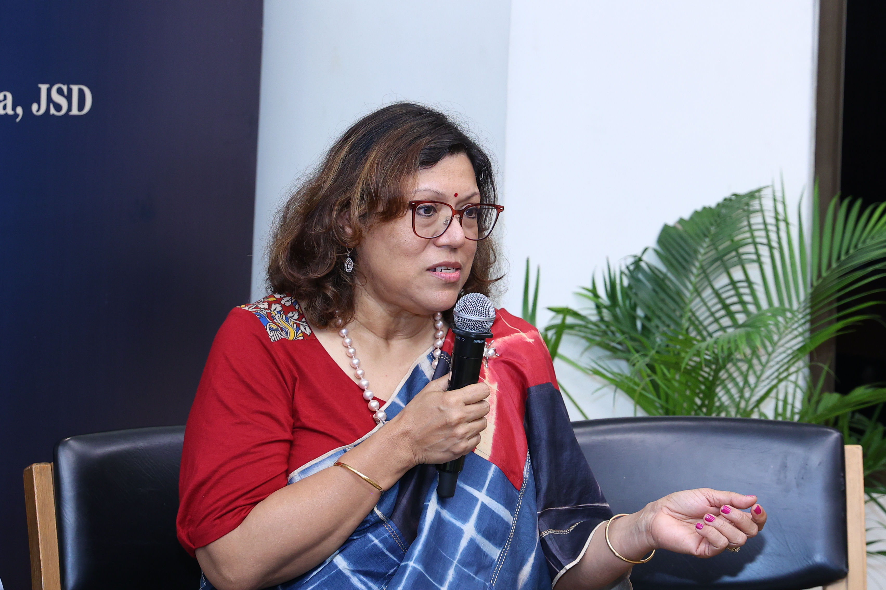
Dr. Tamali Sen Gupta
Author
Tamali took the conversation off the technical-legal track and onto civilisational ground. If you had asked the horses two centuries ago whether they consented to the automobile — a "horsepowered" machine without any horses — they would, presumably, have said no. Their consent for their own near-extinction as working animals was simply not sought. The same logic, she argued, now applies to blue-collar workers replaced by dark fabs that run twenty-four hours without lights, and to a coming generation whose cognitive labour will be reshaped by access to the brains of Ramanujan and Mahadevan on demand.
But the deeper point was about ownership. Every prompt typed into Claude or ChatGPT becomes the property of the entity behind the model. There is, today, no meaningful Indian alternative. Eventually, she said, American companies will hold the essence of everything it is to be Indian — including the small remedies a grandmother taught a grandchild — because nobody is patenting in India.
"In the tech-discovery process, India is being coolified - labour for the laboratory, never named on the patent."
Dr. Tamali Sen Gupta
She left the room with a deadline. Seven to nine months until everything begins to change. Four to five years until quantum is here, breaking cryptography and the confidence in payments that has been built around UPI. She closed by acknowledging the child she had heard at the back of the room: "Mommy, the lady with the mic is scaring us."
Lens Two — Capital, Policy, and Inclusion
Apps to Atoms: who builds, who owns, who benefits.
Moderated by Ajaita Shah, Founder & CEO of Frontier Markets, with Vivan Sharan (Koan Advisory Group), Avanti Shah (Next Verse Ventures), Priyank Garg (former Managing Partner, Indian Angel Network), and the author.
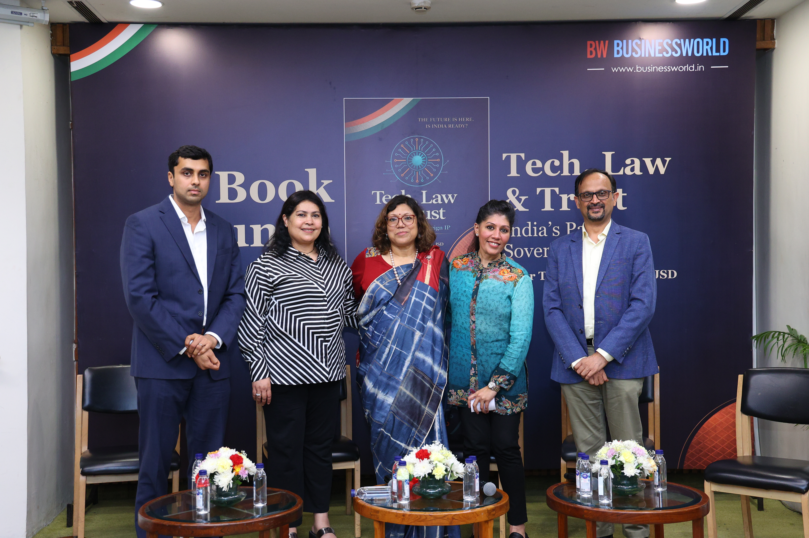
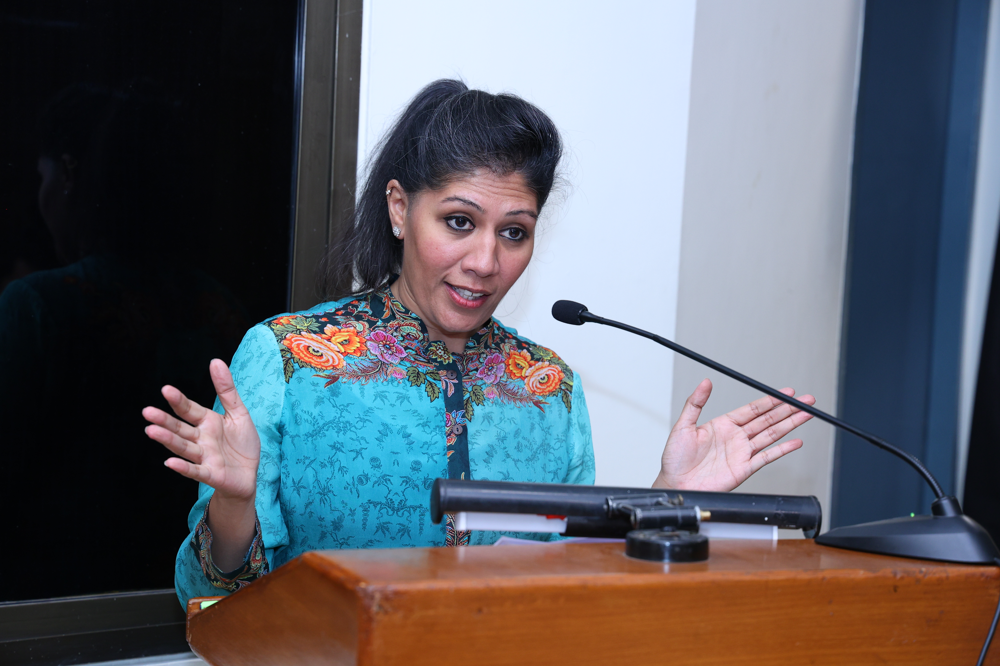
Ajaita Shah Moderator
Founder & CEO, Frontier Markets
Ajaita set the panel's structure with the directness of someone who has spent twenty-one years in rural India: this conversation was not going to remain abstract. The book, she said, asks us to think beyond binaries — not just regulation versus innovation, not just state versus market, but the path to alignment between law and technology, between capital and national capability, between progress and trust. She drove the panel back, repeatedly, to a single question: who actually benefits?
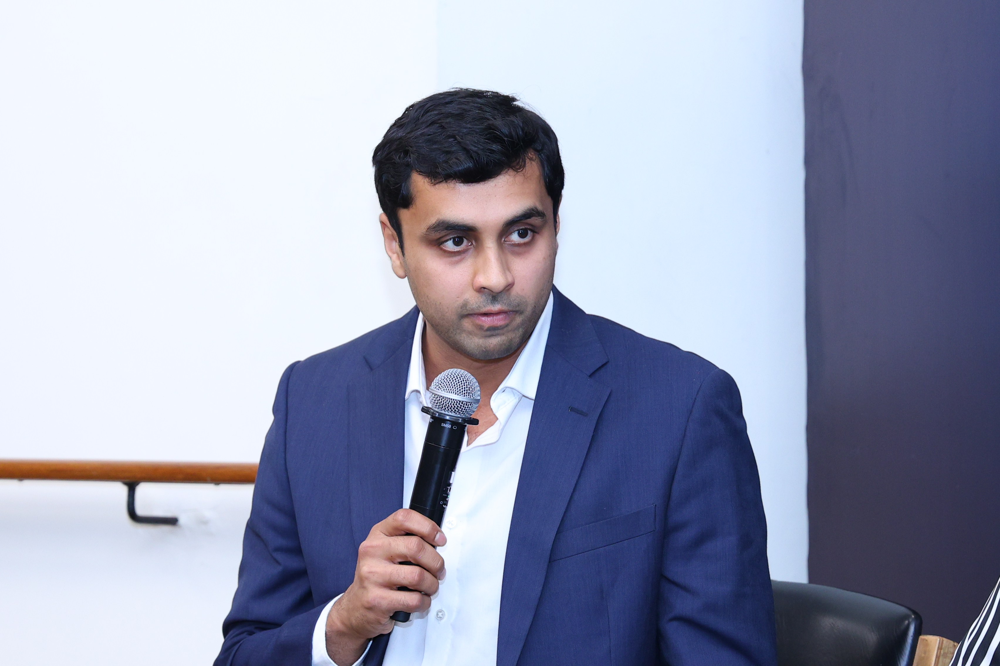
Vivan Sharan
Founder, Koan Advisory Group
Vivan refused the polite framing. Sovereignty, he said, is not a matter of legal doctrine or even policy doctrine. It is something a society negotiates and builds — and you cannot build what you cannot measure. India today does not have a credible source of truth for how many university professors can teach the mathematics behind post-quantum cryptography. It's a handful. That, he said, is a capacity issue before it is a technology one.
His prescriptions for the state were three. First, get out of the business of business — there is no roadmap today by which a citizen can build something that competes with NPCI's UPI monopoly. Second, value economic value — stop eroding it instantly, by stroke of pen, in the name of public interest. Third, stop picking winners. Consumer tech is not a lesser citizen of the economy; it generates the surpluses from which deep tech is later financed.
"Trust your young people, expose them early."
Vivan Sharan
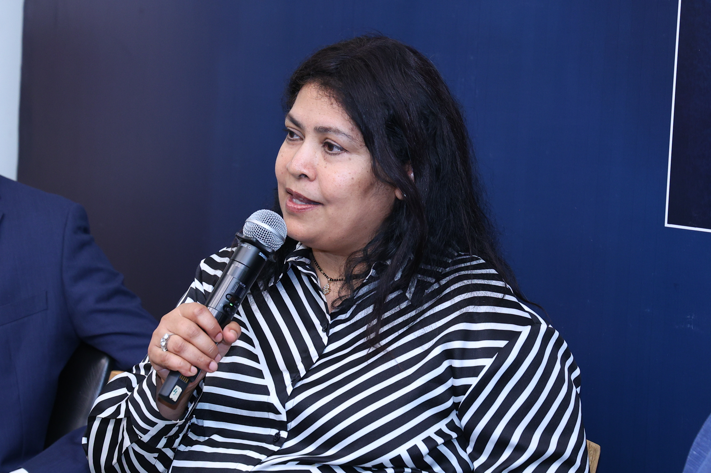
Avanti Shah
Managing Director, Next Verse Ventures
Avanti grounded the abstraction. To an entrepreneur, sovereignty has a working definition:
"Sovereignty is our ability to say 'no' to dependencies that do not serve us or do not align with our values."
Avanti Shah
Trust, in that frame, is the luxury — or the currency — to say yes: to collaborate without fear that value will be taken away. She named the silent precedent: India's UPI stack already proved we can lead. The question is whether we will be equally aggressive in AI and quantum, or whether — as she gently observed — we have already been a little late. On quantum, she warned, quantum advantage is no longer ahead of us; the University of California Irvine has already discovered, in under six months, a new material that supercomputers could not have found. Quantum supremacy is two years away.
Her prescription, were she to set policy: own the entire stack. From the silicon and the qubits at the bottom, through middleware and supply chain, up to the apps, agents, and models. Not because we will achieve it, but because anything less concedes the design.
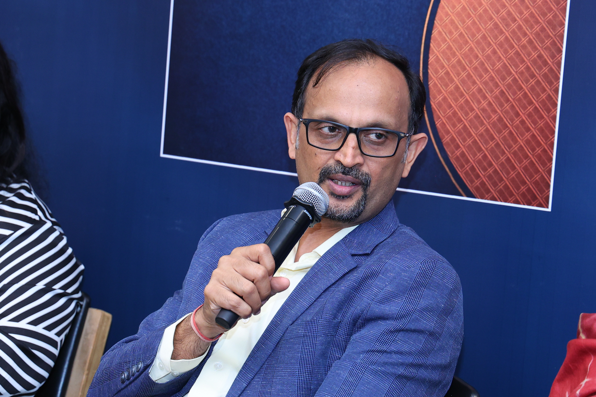
Priyank Garg
Former Managing Partner, Indian Angel Network
Priyank challenged the question itself. It's actually impossible to talk about sovereignty without context. Eight years ago, he said, none of us was worrying about this. And even today: who can build a fab? Every country in the world depends on ASML. The United States, in a war with the EU, could not build a single new fab.
"We are not sovereign — neither is anyone else in the world."
Priyank Garg
India's real problem, he argued, is not sovereignty in the absolute. It is the absence of leverage — a chokepoint of our own, equivalent to ASML or rare earths, that ensures we cannot be taken advantage of. He sketched the investor's view since 2009: a generation of consumer-tech founders following Western templates, gradually giving way, since 2017, to a deep-tech generation that began the moment iDEX showed defence procurement could underwrite revenue. There are now, he said, 270 deep-tech funds in India. The shift is real — but consumers buy utility; deep tech is bought by businesses and governments, and India does not yet have the industrial scale to be the customer.
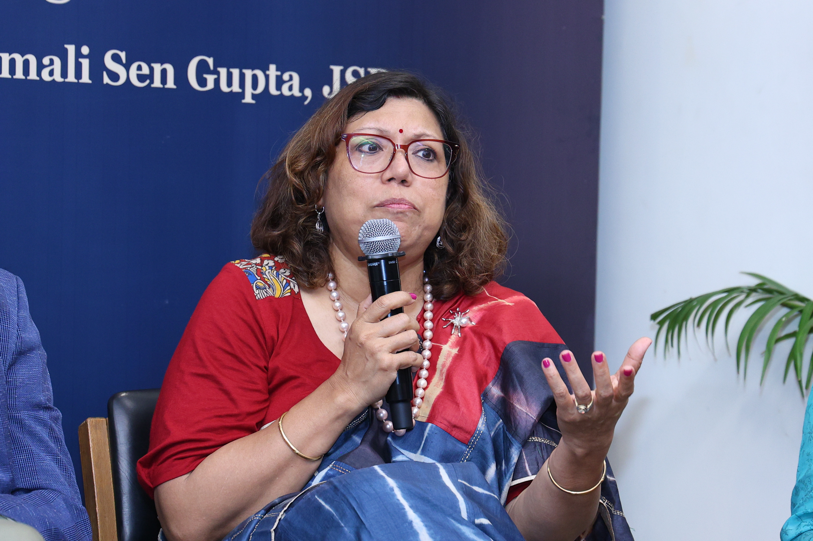
Dr. Tamali Sen Gupta
Author
Asked, mid-panel, to explain quantum computing in five minutes, Tamali distinguished the tech nerds from the nerds who are into tech and put herself, gracefully, in the second category. Classical computing, she said, runs on zero and one. Quantum opens up the half, the quarter, the twelfth, the sixteenth — every gradation of charge a medium can carry. Imagine slicing an apple: top to bottom, sideways, through the centre. The number of permutations explodes. That, in plain terms, is what quantum is going to do to cryptography, to drug discovery, and to the financial system that today rests on the assumption that some problems are simply too hard to solve.
Lens Three — Voices from the Floor
The room speaks.
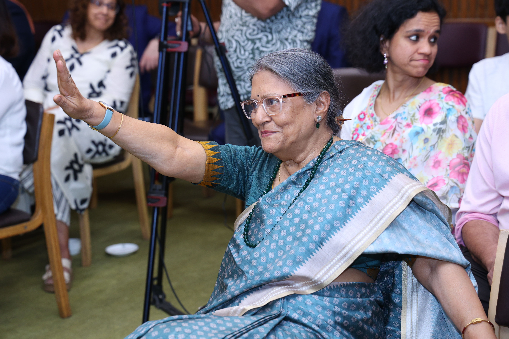
Dr. Mala (Kamala) Dadlani
Scientist; former Joint Director (Research), IARI
Dr. Dadlani — whose work has produced many of the rice varieties in everyday Indian kitchens, including the long-grain basmati 1121 — delivered the unvarnished verdict the evening had been circling.
"We are only the users. Any field you take, we are the users."
Dr. Mala Dadlani
In biotechnology, she said, India has the competence — gene editing, genetically modified varieties, the science is here. But every step is patented elsewhere, sometimes many times over. The government has not invested in scientific research at scale, nor encouraged the private investment that would have made up the difference. She offered no comfort. Really, we have lost our chance. If we revive, that will be a miracle.
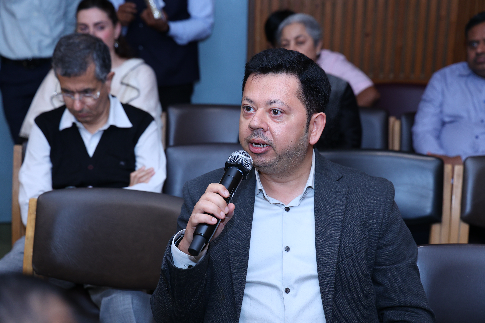
Pradeep From the floor
Physicist
Pradeep raised the older counter-argument, attributing it to the late Prof. Rajeev Motwani of Stanford — the doctoral guide of Larry Page and Sergey Brin, the man at whose pool the first conversations about Google took place. Why should Indians bother about innovation? Let those who are good at it do it. We are very good at utilising innovation. The case for emphasis on regulation, he suggested, may be stronger than the case for emphasis on creation.
Tamali's response was unsentimental. It is the Strait of Hormuz. If it closes, we have no fertilisers left to feed our people. We don't have a choice about technology. We have to get into the game.
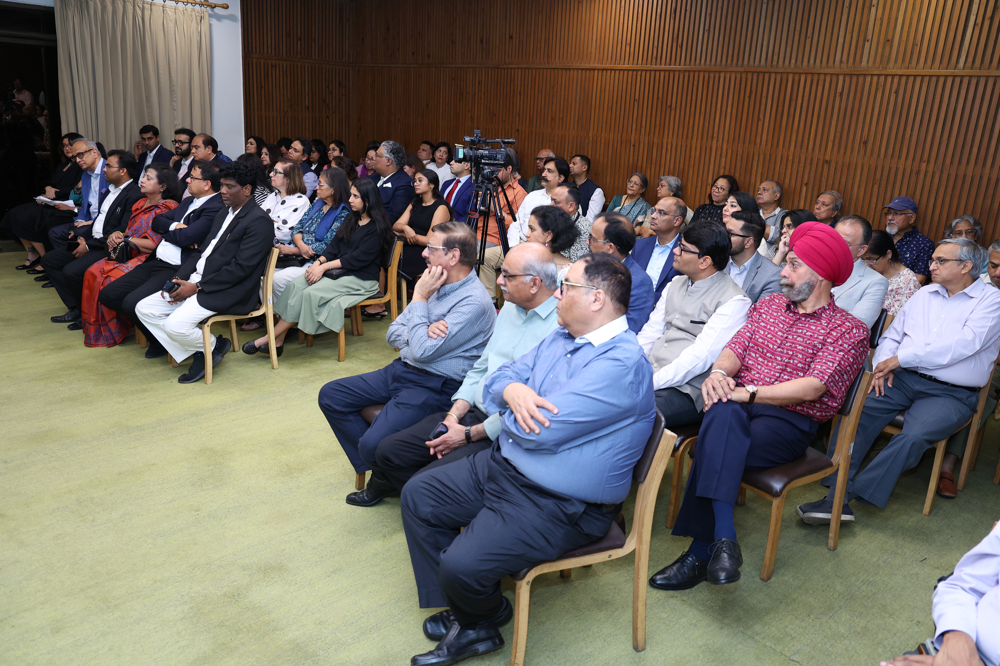
Closing remarks
Prithviraj Dasgupta closes the evening.
Prithviraj Dasgupta
Prithviraj — who had read the manuscript twice in its pre-published form — described the book as a master class on how deep tech is solving, or can solve, real-world problems: a magisterial work on policy, law, technology, and trust, woven through the longer arc that runs from the princely states and colonial India to the present.
"There are people rooted in scholarship. There are people who understand technology because they love it. There are people who understand the policy ramifications. Tamali brings all of them together."
Prithviraj Dasgupta
He closed with the proverb that became the closing line of the evening: It takes a village to raise a child. It also takes a village to write a book.
After the evening
Conversations carried into the night.
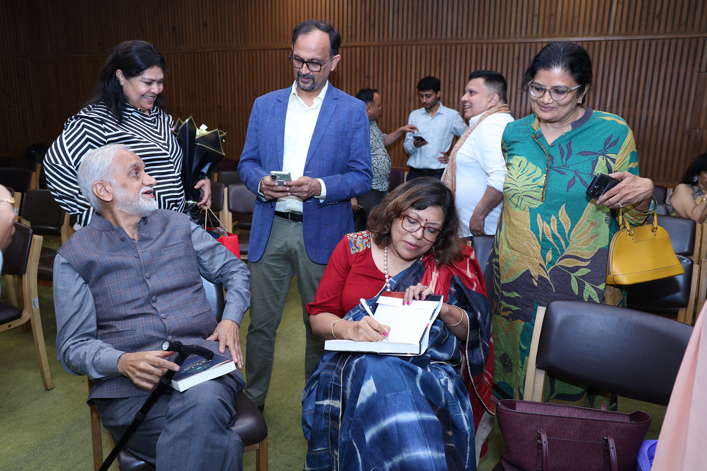
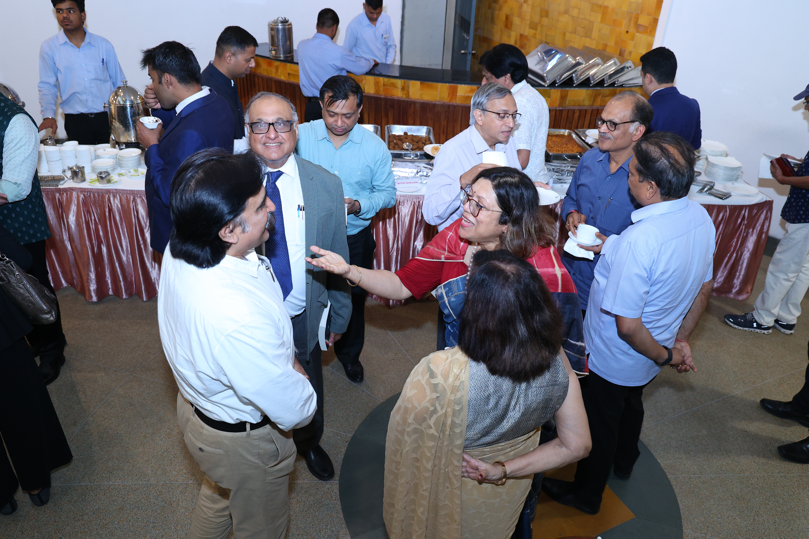
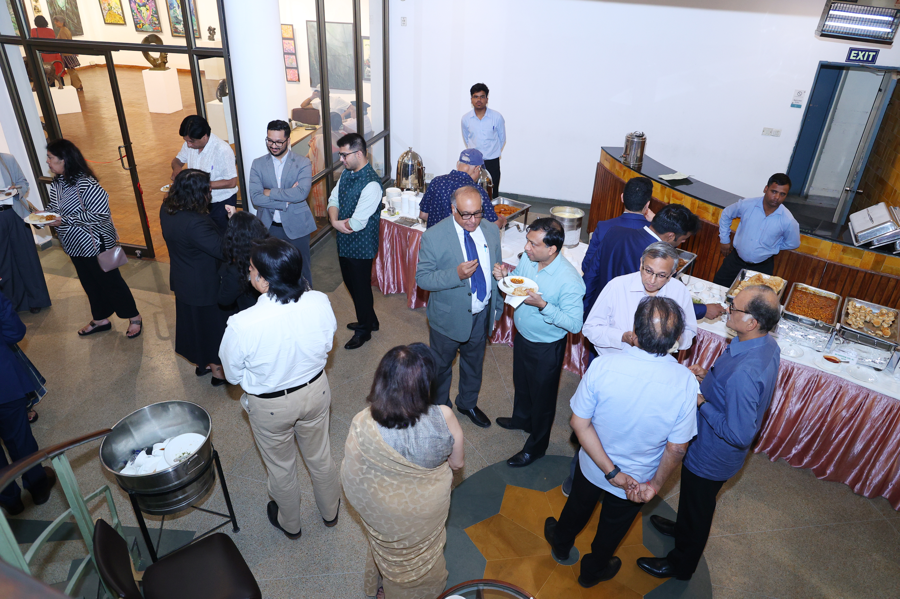
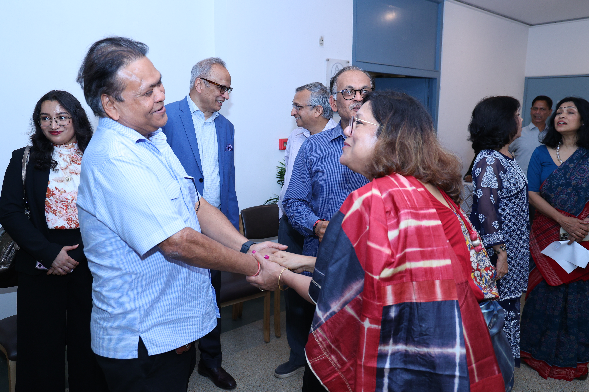
Photo gallery
Browse the evening.
Tap any photograph to view it full-size.
{kind=link}
{kind=link}
{kind=link}
{kind=link}
{kind=link}
{kind=link}
{kind=link}
{kind=link}
{kind=link}
{kind=link}
{kind=link}
Continue the conversation
Read the book.
Every argument made on stage that evening is set out, with citations and primary sources, in Tech, Law & Trust: India's Path to Sovereign IP. Available on Amazon, by WhatsApp, or by email — for individual copies, bulk orders, or institutional programmes.